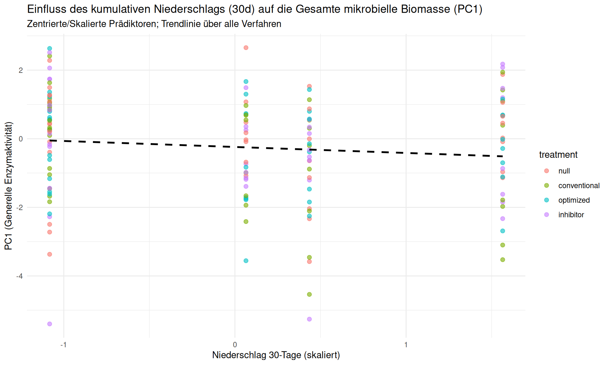

2 Lysimeter-Versuchsanlage
3 1. Hintergrund und Methodik
Die Lysimeteranlage am Standort Reckenholz / Tänikon ermöglicht die hochpräzise Erfassung von Stoff- und Wasserflüssen im ungestörten Bodenprofil unter standardisierten Freilandbedingungen. Im Versuchsjahr 2025 wurde die Hauptkultur Winterweizen (WW) untersucht.
Das experimentelle Design umfasst 32 Lysimeter in einer hierarchischen Struktur: * 2 Bodenarten (C-Gehalt): low (C-armer Mineralboden) vs. high (humus- und C-reicher Oberboden). * 4 Düngungsverfahren: * null: Ungedüngte Kontrollvariante. * conventional: Betriebsübliche mineralische Stickstoffdüngung. * optimized: Bedarfsgerechte, teilflächenspezifisch optimierte Düngung. * inhibitor: Stabilisierte Düngung unter Zusatz eines Nitrifikationshemmstoffs.
Neben den klassischen Parametern (Labor-Nmin, Sickerwassermengen und chemischer N-Auswaschung via FIA) evaluieren wir hier die Sensorik von Digit Soil. Die Sensoren messen die enzymatische Potenzialaktivität (EEA) direkt im Boden, um mikrobielle Stoffumsetzungen in Echtzeit abzubilden.
4 2. Explorative Datenanalyse: Nmin pro Verfahren
Zur Definition der agronomischen Baseline analysieren wir die Verteilung der mineralischen Stickstofffraktionen Ammonium (\(NH_4^+\)) und Nitrat (\(NO_3^-\)) getrennt nach Düngungsverfahren und Bodentyp.
Die Nitratkonzentration dominiert den mineralischen Stickstoffpool über alle Verfahren. Im C-reichen Boden (high) ist das Baseniveau der Mineralisierung tendenziell erhöht. Die stabilisierte Variante (inhibitor) zeigt die erwartete zeitliche Verzögerung der Nitrifikation.
5 3. Sensor-Signale: Enzymatische Aktivität (EEA)
Analog zu den Nmin-Werten untersuchen wir die Signale der Digit Soil Sensoren. In den Lysimetermessreihen zeigte sich wie im DEMO-Versuch, dass das Enzym LAP (Leucin-Aminopeptidase) erhebliche Messausfälle aufweist. Um einen stochastischen Informationsverlust zu verhindern, stützt sich die Auswertung auf die vier robust quantifizierten Enzyme: NAG, GLS, MUP und MUX.

Die C-reichen Böden weisen über alle vier Enzymsysteme ein signifikant höheres Aktivitätsniveau auf, was die biologische Puffer- und Umsetzungskapazität humusreicher Böden unterstreicht.
6 4. Systemische Kopplung: Korrelationsanalyse
Zur Analyse der internen Kopplung berechnen wir die Spearman-Rangkorrelationsmatrix zwischen den vier Bodenenzymen und den Nmin-Laborwerten.

Die Enzyme zeigen untereinander eine ausgeprägte Multikollinearität (\(r > 0.6\)), was auf ein eng gekoppeltes mikrobiologisches Gesamtregime hindeutet. Die Korrelation mit den aktuellen Nmin-Laborwerten ist dagegen moderat, was den konzeptionellen Unterschied zwischen stationärem N-Pool und dynamischem Umsetzungspotenzial reflektiert.
7 5. Biologisches Profil und Dimensionsreduktion
Zur Bewältigung der Multikollinearität und zur Extraktion der dominanten biologischen Hauptachsen wenden wir eine robuste Hauptkomponentenanalyse (ROBPCA nach Hubert et al.) an.

PC1 trennt sehr prägnant die beiden Bodenarten: C-reiche Böden liegen im positiven Aktivitätsbereich, während C-arme Böden im negativen Bereich clustern.
Zur kontinuierlichen Überprüfung der Nährstoffkopplung projizieren wir nun die gemessenen Nitrat- und Ammoniumkonzentrationen als kontinuierliche Farbskalen auf den Hauptkomponentenraum:

8 6. Mechanistisches N-Balance Modell (Intervall-basiert)
Analog zum DEMO-Versuch führen wir nun die Messintervalle zwischen den Beprobungsterminen zusammen. Die Zielvariable ist die Netto-Stickstoffveränderung im Bodenprofil (\(\Delta N_{min} = N_{min}(t_2) - N_{min}(t_1)\)). Wir testen, inwiefern die enzymatische Signatur (PC1 und PC2 als Time-Weighted Average) neben der Witterung (Niederschlagssumme des Intervalls) die N-Dynamik steuert.
Die Anpassung des linearen gemischten Modells liefert folgende Schätzer:
| Parameter | Estimate | Std. Error | t-Wert | p-Wert |
|---|---|---|---|---|
| Intercept | -0.591 | 1.670 | -0.35 | 0.7239 |
| PC1 (Aktivität) | -0.311 | 1.133 | -0.27 | 0.7843 |
| PC2 (C/N-Shift) | -1.455 | 0.967 | -1.50 | 0.1352 |
| Precip (linear) | -1.033 | 0.886 | -1.17 | 0.2463 |
| Precip² (quadratisch) | 0.027 | 0.730 | 0.04 | 0.9708 |
- Marginales \(R^2\): 7.4%
- Konditionales \(R^2\): 7.4%
- RMSE: 7.33 mg/kg
8.0.1 Partielle Residuen: Der isolierte biologische Effekt (PC2)
Bereinigt um den Niederschlagseinfluss visualisieren wir das partielle Residuum der Stickstoffänderung in Abhängigkeit des C/N-Verschiebungsvektors (PC2):

8.0.2 3D-Visualisierung der Regressionsebene
9 7. Saisonaler Ansatz: Erste vs. Letzte Messung & Auswaschungsbilanz
Abschliessend betrachten wir die Nettoveränderung über die gesamte Vegetationsperiode (März bis Juli 2025). Wir prüfen, ob die saisonale Verschiebung im mikrobiellen Enzymprofil (\(\Delta\)PC1 und \(\Delta\)PC2) mit der Netto-N-Bilanz und der im Herbst gemessenen Sickerwasserauswaschung korreliert.
Call:
lm(formula = Delta_Ntot ~ Delta_PC1 + Delta_PC2 + soil_type +
treatment, data = df_season)
Residuals:
Min 1Q Median 3Q Max
-5.4831 -0.7040 -0.2416 1.0492 3.6237
Coefficients:
Estimate Std. Error t value Pr(>|t|)
(Intercept) -0.90729 1.02294 -0.887 0.38357
Delta_PC1 -0.28286 0.22998 -1.230 0.23018
Delta_PC2 -0.06116 0.55045 -0.111 0.91242
soil_typeC-reich (high) 0.78283 0.87459 0.895 0.37928
treatmentconventional 3.04272 1.03269 2.946 0.00687 **
treatmentoptimized 1.49531 1.01978 1.466 0.15503
treatmentinhibitor 0.29251 1.01636 0.288 0.77587
---
Signif. codes: 0 '***' 0.001 '**' 0.01 '*' 0.05 '.' 0.1 ' ' 1
Residual standard error: 2.031 on 25 degrees of freedom
Multiple R-squared: 0.3478, Adjusted R-squared: 0.1913
F-statistic: 2.222 on 6 and 25 DF, p-value: 0.07437
9.0.1 Fazit für die Lysimeter-Anlage
Die synoptische Analyse der Lysimeterdaten bestätigt den Befund aus dem DEMO-Versuch: Während die Sensoren signifikante Unterschiede zwischen grundlegenden Bodentypen (C-arm vs. C-reich) abbilden, wird die kurzfristige Dynamik der Stickstoffbilanz im Bodenprofil primär durch Witterungs- und physikalische Wasserflüsse dominiert.
10 5. Pedoclimatic Proxy & Lag Analysis (LMM + AIC)
Soil enzymes are stabilized by organo-mineral complexes, functioning as a “reservoir” that integrates pedoclimatic drivers (soil moisture, temperature) over time. Therefore, effective enzymatic abundance and activity are often better predicted by cumulative environmental windows (e.g., 7-day, 14-day, 30-day proxies) rather than instantaneous measurements.
Da unsere Enzym-Messungen zeitlich diskret (T1, T2 etc.) und nicht kontinuierlich sind, können klassische Distributed Lag Models (DLM) nicht ohne weiteres angewendet werden. Stattdessen nutzen wir Linear Mixed Models (LMM) in Kombination mit dem Akaike Information Criterion (AIC), um empirisch zu bestimmen, welches Akkumulations-Fenster die Varianz der Sensordaten (z.B. Ntot, NAG, GLS) am besten erklärt.
10.1 Vergleich der Akkumulations-Fenster für alle Signale
Wir modellieren verschiedene Biomarker und Hauptkomponenten als Funktion von kumulativem Niederschlag und Wärmesumme, mit zufälligen Effekten für das Lysimeter (plot_nr) und die Behandlung (treatment).
| Signal | 7-Tage | 14-Tage | 30-Tage | Aridity (14d) | Best_Lag |
|---|---|---|---|---|---|
| NAG | 603.8 | 603.6 | 609.3 | 608.6 | 14-Tage |
| GLS | 912.2 | 910.9 | 898.6 | 919.6 | 30-Tage |
| MUP | 1297.8 | 1323.4 | 1271.1 | 1367.6 | 30-Tage |
| MUX | 490.2 | 488.2 | 486.1 | 516.8 | 30-Tage |
| PC1 | 556.9 | 554.4 | 545.0 | 559.3 | 30-Tage |
| PC2 | 314.4 | 346.0 | 312.5 | 411.3 | 30-Tage |
| Ntot | 950.0 | 950.5 | 947.5 | 948.7 | 30-Tage |
Das Modell mit dem niedrigsten AIC repräsentiert das wahrscheinlichste Akkumulations-Fenster (“Lag”), in dem die Bodenumwelt die mikrobielle Enzym-Produktion geprägt hat. Die robuste PCA (PC1) zeigt, dass die allgemeine mikrobielle Aktivität im Lysimeter ebenfalls stark von kurz- bis mittelfristigen Wetterereignissen abhängt.
10.2 Visualisierung des besten Prädiktors (PC1 vs. 30-Tage Niederschlag)
